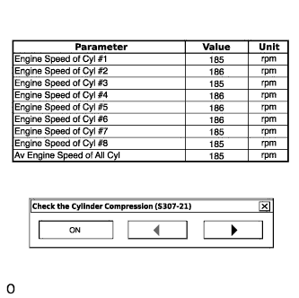

SFI SYSTEM > DATA LIST / ACTIVE TEST |
| DATA LIST |
Warm up the engine.
Turn the A/C switch off.
Turn the engine switch off.
Connect the intelligent tester to the DLC3.
Turn the engine switch on (IG).
Turn the tester on.
Enter the following menus: Powertrain / Engine and ECT / Data List.
According to the display on the tester, read the Data List.
| Various Vehicle Conditions 1 |
| Tester Display | Measurement Item/Range | Normal Condition | Stored as Freeze Frame Data |
| Vehicle Speed | Vehicle speed/ Min.: 0 km/h, Max.: 255 km/h | Actual vehicle speed | Yes |
Diagnostic Note:
| |||
| Tester Display | Measurement Item/Range | Normal Condition | Stored as Freeze Frame Data |
| Engine Speed | Engine speed/ Min.: 0 rpm, Max.: 16383 rpm | 550 to 780 rpm: Idling | Yes |
| Results of real-vehicle check: Idling (warm up the engine and A/C off): 710 rpm | |||
| Diagnostic Note: When the crankshaft position sensor is malfunctioning, "Engine Speed" is approximately 0 or varies greatly from the actual engine speed. | |||
| Tester Display | Measurement Item/Range | Normal Condition | Stored as Freeze Frame Data |
| Calculate Load | Load calculated by ECM/ Min.: 0%, Max.: 100% | - | Yes |
Results of real-vehicle check:
| |||
| Diagnostic Note: This is the engine load calculated based on the estimated intake manifold pressure. Calculate Load = Estimated intake manifold pressure / maximum intake manifold pressure x 100 (%) (For example, when the estimated intake manifold pressure is the same as atmospheric pressure, Calculate Load is 100%.) | |||
| Tester Display | Measurement Item/Range | Normal Condition | Stored as Freeze Frame Data |
| Vehicle Load | Vehicle load/ Min.: 0%, Max.: 25700% | - | Yes |
Results of real-vehicle check:
| |||
| Diagnostic Note: This is the engine intake air charging efficiency. Vehicle Load = Current intake airflow (g/rev.) / maximum intake airflow Maximum intake airflow = Displacement (L) / 2 x 1.2 (g/rev.)
| |||
| Tester Display | Measurement Item/Range | Normal Condition | Stored as Freeze Frame Data |
| MAF | Airflow rate from Mass Air Flow (MAF) meter/ Min.: 0 gm/s, Max.: 655.35 gm/s | 3.4 to 6.2 gm/s: Idling 18.3 to 25.8 gm/s: 3000 rpm (without load) | Yes |
Results of real-vehicle check:
| |||
| Diagnostic Note: This is the intake air amount from the mass air flow meter. | |||
| Tester Display | Measurement Item/Range | Normal Condition | Stored as Freeze Frame Data |
| Atmosphere Pressure | Atmospheric pressure/ Min.: 0 kPa, Max.: 255 kPa | Equivalent to atmospheric pressure (absolute pressure) | Yes |
| Results of real-vehicle check: Idling (warm up the engine): 100 kPa | |||
Diagnostic Note:
| |||
| Tester Display | Measurement Item/Range | Normal Condition | Stored as Freeze Frame Data |
| MAP | Intake manifold pressure/ Min.: 0 kPa, Max.: 255 kPa |
| Yes |
Results of real-vehicle check:
| |||
| Diagnostic Note: This is the intake manifold pressure. This item is the pressure detected by the manifold absolute pressure sensor and is used for EGR system control.
| |||
| Tester Display | Measurement Item/Range | Normal Condition | Stored as Freeze Frame Data |
| Coolant Temp | Coolant temperature/ Min.: -40°C, Max.: 140°C | 75 to 100°C (167 to 212°F): After warming up | Yes |
| Diagnostic Note: This is the engine coolant temperature.
| |||
| Tester Display | Measurement Item/Range | Normal Condition | Stored as Freeze Frame Data |
| Intake Air | Intake air temperature/ Min.: -40°C, Max.: 140°C | Equivalent to temperature at location of mass air flow meter | Yes |
Diagnostic Note:
| |||
| Tester Display | Measurement Item/Range | Normal Condition | Stored as Freeze Frame Data |
| Ambient Temperature | Ambient temperature/ Min.: -40°C, Max.: 215°C | Equivalent to ambient air temperature | Yes |
| Tester Display | Measurement Item/Range | Normal Condition | Stored as Freeze Frame Data |
| Engine Run Time | Engine run time/ Min.: 0 s, Max.: 65535 s | Time after engine start | Yes |
| Diagnostic Note: This is the time elapsed since the engine started.
| |||
| Tester Display | Measurement Item/Range | Normal Condition | Stored as Freeze Frame Data |
| Initial Engine Coolant Temp | Initial engine coolant temperature/ Min.: -40°C, Max.: 215°C | - | Yes |
| Diagnostic Note: This is the coolant temperature stored when the engine switch is turned on (IG). | |||
| Tester Display | Measurement Item/Range | Normal Condition | Stored as Freeze Frame Data |
| Initial Intake Air Temp | Initial intake air temperature/ Min.: -40°C, Max.: 140°C | - | Yes |
| Diagnostic Note: This is the intake air temperature stored when the engine switch is turned on (IG). | |||
| Tester Display | Measurement Item/Range | Normal Condition | Stored as Freeze Frame Data |
| Battery Voltage | Battery voltage/ Min.: 0 V, Max.: 65.535 V | 11 to 14 V: Idling | Yes |
Results of real-vehicle check:
| |||
| Diagnostic Note: If 11 V or less, characteristics of some electrical components may change. | |||
| Throttle Control |
| Tester Display | Measurement Item/Range | Normal Condition | Stored as Freeze Frame Data |
| Accelerator Position | Accelerator pedal position/ Min.: 0%, Max.: 100.0% | Actual accelerator pedal position | No |
Results of real-vehicle check:
| |||
| Diagnostic Note: This is the accelerator pedal position defined using the learned fully released position (sensor output) of accelerator pedal position sensor No. 1 as 0% and the fully depressed position as 100%. | |||
| Tester Display | Measurement Item/Range | Normal Condition | Stored as Freeze Frame Data |
| Accel Sens. No.1 Volt % | Absolute Accelerator Pedal Position (APP) No. 1/ Min.: 0%, Max.: 100% | 10 to 22%: Accelerator pedal released 54 to 86%: Accelerator pedal fully depressed | Yes |
Results of real-vehicle check:
| |||
| Diagnostic Note: The accelerator pedal position sensor No. 1 output is converted using 5 V = 100%.
| |||
| Tester Display | Measurement Item/Range | Normal Condition | Stored as Freeze Frame Data |
| Accel Sens. No.2 Volt % | Absolute APP No. 2/ Min.: 0%, Max.: 100% | 12 to 42%: Accelerator pedal released 66 to 98%: Accelerator pedal fully depressed | Yes |
Results of real-vehicle check:
| |||
| Diagnostic Note: The accelerator pedal position sensor No. 2 output is converted using 5 V = 100%. | |||
| Tester Display | Measurement Item/Range | Normal Condition | Stored as Freeze Frame Data |
| Accel Sensor Out No.1 | APP sensor No. 1 voltage/ Min.: 0 V, Max.: 4.98 V | 0.5 to 1.1 V: Accelerator pedal released 2.6 to 4.5 V: Accelerator pedal fully depressed | No |
Results of real-vehicle check:
| |||
| Diagnostic Note: This is the raw voltage from the accelerator pedal position sensor No. 1. | |||
| Tester Display | Measurement Item/Range | Normal Condition | Stored as Freeze Frame Data |
| Accel Sensor Out No.2 | APP sensor No. 2 voltage/ Min.: 0 V, Max.: 4.98 V | 1.2 to 2.0 V: Accelerator pedal released 3.4 to 5.0 V: Accelerator pedal fully depressed | No |
Results of real-vehicle check:
| |||
| Diagnostic Note: This is the raw voltage from the accelerator pedal position sensor No. 2. Accelerator pedal position sensor No. 2 is used to monitor accelerator pedal position sensor No. 1. When there is a malfunction in sensor No. 1, the ECM uses sensor No. 2 to control the engine. | |||
| Tester Display | Measurement Item/Range | Normal Condition | Stored as Freeze Frame Data |
| Accelerator Idle Position | Whether or not accelerator pedal position sensor detecting released accelerator pedal/ ON or OFF | ON: Accelerator pedal released | No |
Results of real-vehicle check:
| |||
| Diagnostic Note: This is a parameter calculated by the ECM which indicates whether the accelerator pedal is in the learned idle position. | |||
| Tester Display | Measurement Item/Range | Normal Condition | Stored as Freeze Frame Data |
| Accel Fully Close Learn #1 | Accelerator fully released learned value No. 1/ Min.: 0 deg, Max.: 124.5 deg | - | No |
| Results of real-vehicle check: Engine switch on (IG): 20.0 deg | |||
| Diagnostic Note: This is the value of accelerator pedal position sensor No. 1 learned when the accelerator pedal is released. | |||
| Tester Display | Measurement Item/Range | Normal Condition | Stored as Freeze Frame Data |
| Accel Fully Close Learn #2 | Accelerator fully released learned value No. 2/ Min.: 0 deg, Max.: 124.5 deg | - | No |
| Results of real-vehicle check: Engine switch on (IG): 39.5 deg | |||
| Diagnostic Note: This is the value of accelerator pedal position sensor No. 2 learned when the accelerator pedal is released. | |||
| Tester Display | Measurement Item/Range | Normal Condition | Stored as Freeze Frame Data |
| Throttle Sensor Volt % | Absolute throttle position sensor/ Min.: 0%, Max.: 100% |
| Yes |
Results of real-vehicle check:
| |||
| Diagnostic Note: The throttle position sensor No. 1 output is converted using 5 V = 100%.
| |||
| Tester Display | Measurement Item/Range | Normal Condition | Stored as Freeze Frame Data |
| Throttl Sensor #2 Volt % | Throttle sensor position #2/ Min.: 0%, Max.: 100% |
| Yes |
Results of real-vehicle check:
| |||
| Diagnostic Note: The throttle position sensor No. 2 output is converted using 5 V = 100%. | |||
| Tester Display | Measurement Item/Range | Normal Condition | Stored as Freeze Frame Data |
| ST1 | Brake pedal signal/ ON or OFF | ON: Brake pedal depressed OFF: Brake pedal released | No |
| Diagnostic Note: This is the brake pedal switch signal. | |||
| Tester Display | Measurement Item/Range | Normal Condition | Stored as Freeze Frame Data |
| System Guard | System guard/ ON or OFF | ON | No |
| Results of real-vehicle check: Idling (warm up the engine): ON | |||
| Diagnostic Note: When there is a difference between the target and actual throttle valve opening angles, system guard turns off and stops the electronic throttle control system function. OFF: Electronic throttle control is stopped. | |||
| Tester Display | Measurement Item/Range | Normal Condition | Stored as Freeze Frame Data |
| Open Side Malfunction | Open malfunction/ ON or OFF | OFF | No |
| Diagnostic Note: This parameter indicates a malfunction in the electronic throttle when the throttle valve is open. | |||
| Tester Display | Measurement Item/Range | Normal Condition | Stored as Freeze Frame Data |
| Throttle Idle Position | Whether or not throttle position sensor detecting idle/ ON or OFF | - | No |
Results of real-vehicle check:
| |||
| Diagnostic Note: This is a parameter calculated by the ECM. The value is ON when the throttle is at the idle position and OFF when the throttle is open. | |||
| Tester Display | Measurement Item/Range | Normal Condition | Stored as Freeze Frame Data |
| Throttle Require Position | Required throttle position/ Min.: 0 V, Max.: 4.98 V | - | No |
Results of real-vehicle check:
| |||
| Diagnostic Note: This is a value calculated by the ECM showing the voltage for the target throttle valve position. It is almost an exact match of the Throttle Position No. 1 value except during very rapid throttle valve movement, such as that used during wheelspin control. | |||
| Tester Display | Measurement Item/Range | Normal Condition | Stored as Freeze Frame Data |
| Throttle Sensor Position | Throttle sensor position/ Min.: 0%, Max.: 100% |
| Yes |
Results of real-vehicle check:
| |||
| Diagnostic Note: This is the throttle valve opening amount used for engine control. (100% signifies 125° of throttle valve rotation. This does not include the amount the throttle valve is opened to maintain the idling speed during idling.) This value has no meaning when the engine switch is on (IG) and the engine is stopped. The throttle valve opening amount during idling is indicated by 0%. When the throttle valve is fully open, the value is 68%. | |||
| Tester Display | Measurement Item/Range | Normal Condition | Stored as Freeze Frame Data |
| Throttle Position No. 1 | Throttle position sensor No. 1 output voltage/ Min.: 0 V, Max.: 4.98 V | Almost same as "Throttle Require Position"
| No |
Results of real-vehicle check:
| |||
| Diagnostic Note: This is the throttle position sensor No. 1 output voltage. | |||
| Tester Display | Measurement Item/Range | Normal Condition | Stored as Freeze Frame Data |
| Throttle Position No. 2 | Throttle position sensor No. 2 output voltage/ Min.: 0 V, Max.: 4.98 V |
| No |
Results of real-vehicle check:
| |||
| Diagnostic Note: This is the throttle position sensor No. 2 output voltage. | |||
| Tester Display | Measurement Item/Range | Normal Condition | Stored as Freeze Frame Data |
| Throttle Position Command | Throttle position command value/ Min.: 0 V, Max.: 4.98 V | - | No |
| Diagnostic Note: Throttle Position Command is the same value as Throttle Require Position. | |||
| Tester Display | Measurement Item/Range | Normal Condition | Stored as Freeze Frame Data |
| Throttle Sens Open Pos #1 | Throttle position sensor No. 1/ Min.: 0 V, Max.: 4.98 V | 0.6 to 1.4 V | No |
| Results of real-vehicle check: Engine switch on (IG): 0.96 V | |||
| Diagnostic Note: This is the throttle position sensor No. 1 output voltage when there is no current supplied to the electronic throttle actuator. The accelerator pedal is released but the throttle valve is kept open by the throttle valve opener with the engine switch on (IG). | |||
| Tester Display | Measurement Item/Range | Normal Condition | Stored as Freeze Frame Data |
| Throttle Sens Open Pos #2 | Throttle position sensor No. 2/ Min.: 0 V, Max.: 4.98 V | 1.7 to 2.5 V | No |
| Results of real-vehicle check: Engine switch on (IG): 2.07 V | |||
| Diagnostic Note: This is the throttle position sensor No. 2 output voltage when there is no current supplied to the electronic throttle actuator. The accelerator pedal is released but the throttle valve is kept open by the throttle valve opener with the engine switch on (IG). | |||
| Tester Display | Measurement Item/Range | Normal Condition | Stored as Freeze Frame Data |
| Throttle Motor Current | Throttle actuator current/ Min.: 0 A, Max.: 19.9 A | 0 to 3.0 A: Idling | No |
Results of real-vehicle check:
| |||
| Diagnostic Note: When this value is large but the actual opening angle (Throttle Position No. 1) does not reach the target opening angle (Throttle Require Position), there is an unable to open malfunction. | |||
| Tester Display | Measurement Item/Range | Normal Condition | Stored as Freeze Frame Data |
| Throttle Motor DUTY | Throttle actuator/ Min.: 0%, Max.: 100% | 0.5 to 40%: Idling | Yes |
| Diagnostic Note: This is the output duty ratio of the throttle actuator drive circuit. | |||
| Tester Display | Measurement Item/Range | Normal Condition | Stored as Freeze Frame Data |
| Throttle Motor Duty (Open) | Throttle actuator duty ratio (open)/ Min.: 0%, Max.: 255% | 0 to 40%: Idling | No |
Results of real-vehicle check:
| |||
Diagnostic Note:
| |||
| Tester Display | Measurement Item/Range | Normal Condition | Stored as Freeze Frame Data |
| Throttle Motor Duty (Close) | Throttle actuator duty ratio (close)/ Min.: 0%, Max.: 255% | 0 to 40%: Idling | No |
Results of real-vehicle check:
| |||
| Diagnostic Note: This is the duty ratio used to drive the throttle actuator and close the throttle valve. It is an ECM command signal.
| |||
| Tester Display | Measurement Item/Range | Normal Condition | Stored as Freeze Frame Data |
| Throttle Fully Close Learn | Throttle valve fully closed (learned value)/ Min.: 0 V, Max.: 4.98 V | 0.4 to 1.0 V: Accelerator pedal released | No |
| Results of real-vehicle check: Engine switch on (IG): 0.63 V | |||
Diagnostic Note:
| |||
| Tester Display | Measurement Item/Range | Normal Condition | Stored as Freeze Frame Data |
| +BM Voltage | +BM voltage/ Min.: 0 V, Max.: 79.998 V | 11 to 14 V: Engine switch on (IG) and system normal | No |
| Diagnostic Note: This is the power supply for the electronic throttle actuator. When the power supply is interrupted for approximately 1 second, DTCs P2118 (open circuit) and P0657 (short circuit, ECU malfunction) are stored and the electronic throttle control system enters fail-safe mode (normal operation is not restored until the engine switch is turned off). | |||
| Tester Display | Measurement Item/Range | Normal Condition | Stored as Freeze Frame Data |
| Actuator Power Supply | Actuator power supply/ ON or OFF | ON: Idling | No |
| Diagnostic Note: If +BM power is lost, this item changes to OFF. | |||
| Tester Display | Measurement Item/Range | Normal Condition | Stored as Freeze Frame Data |
| Throttle Position | Throttle valve opening angle/ Min.: 0 deg, Max.: 499.99 deg | - | Yes |
Results of real-vehicle check:
| |||
| Diagnostic Note: This value has no meaning when the engine switch is on (IG) and the engine is stopped. | |||
| Idle Speed Control |
| Tester Display | Measurement Item/Range | Normal Condition | Stored as Freeze Frame Data |
| ISC Flow | Flow rate calculated using information from MAF (mass air flow) meter/ Min.: 0 L/s, Max.: 79.99 L/s | - | Yes |
| Results of real-vehicle check: Idling (warm up the engine): 3.72 L/s | |||
| Diagnostic Note: This is the total ISC airflow amount (the amount of intake air necessary to maintain idling).
| |||
| Tester Display | Measurement Item/Range | Normal Condition | Stored as Freeze Frame Data |
| ISC Position | Requested throttle opening amount calculated using ISC control/ Min.: 0 deg, Max.: 499.99 deg | - | Yes |
| Results of real-vehicle check: Idling (warm up the engine): 2.95 deg | |||
| Diagnostic Note: This is the electronic throttle valve opening amount necessary to maintain idling. In other words, this is the throttle valve opening amount necessary to provide adequate ISC airflow. | |||
| Tester Display | Measurement Item/Range | Normal Condition | Stored as Freeze Frame Data |
| ISC Feedback Value | ISC feedback amount/ Min.: -40 L/s, Max.: 39.99 L/s | - | Yes |
| Results of real-vehicle check: Idling (warm up the engine): -0.09 L/s | |||
| Diagnostic Note: This is the feedback amount necessary to adjust the airflow amount to maintain the target idling speed.
| |||
| Tester Display | Measurement Item/Range | Normal Condition | Stored as Freeze Frame Data |
| ISC Learning Value | ISC learned airflow value/ Min.: -40 L/s, Max.: 39.99 L/s | - | Yes |
| Results of real-vehicle check: Idling (warm up the engine): 4.11 L/s | |||
| Diagnostic Note: This is the learned value of the airflow amount necessary for engine idling.
| |||
| Tester Display | Measurement Item/Range | Normal Condition | Stored as Freeze Frame Data |
| Electric Load Feedback Val | Compensation flow rate according to electrical load/ Min.: -40 L/s, Max.: 39.99 L/s | - | Yes |
| Results of real-vehicle check: Idling (headlights and window defogger on): 0.37 L/s | |||
| Diagnostic Note: This is the ISC compensation amount determined according to the electrical load. | |||
| Tester Display | Measurement Item/Range | Normal Condition | Stored as Freeze Frame Data |
| Air Conditioner FB Val | Compensation flow rate according to air conditioner load/ Min.: -40 L/s, Max.: 39.99 L/s | - | Yes |
| Results of real-vehicle check: Idling (A/C on): 1.98 L/s | |||
| Diagnostic Note: This is the ISC compensation amount determined according to the air conditioner load. | |||
| Tester Display | Measurement Item/Range | Normal Condition | Stored as Freeze Frame Data |
| PS Feedback Val | Compensation flow rate according to power steering load/ Min.: -40 L/s, Max.: 39.99 L/s | - | Yes |
| Results of real-vehicle check: Idling (power steering on): 1.60 L/s | |||
| Diagnostic Note: This is the ISC compensation amount determined according to the power steering load. | |||
| Tester Display | Measurement Item/Range | Normal Condition | Stored as Freeze Frame Data |
| Low Revolution Control | Low engine speed control operation state/ ON or OFF | - | Yes |
| Results of real-vehicle check: Idling (warm up the engine): OFF | |||
Diagnostic Note:
| |||
| Tester Display | Measurement Item/Range | Normal Condition | Stored as Freeze Frame Data |
| N Range Status | Shift lever N status/ ON or OFF | - | Yes |
| Tester Display | Measurement Item/Range | Normal Condition | Stored as Freeze Frame Data |
| Eng Stall Control FB Flow | Intake air compensation flow rate/ Min.: -40 L/s, Max.: 39.99 L/s | - | Yes |
| Results of real-vehicle check: Idling (warm up the engine): 0.00 L/s | |||
Diagnostic Note:
| |||
| Tester Display | Measurement Item/Range | Normal Condition | Stored as Freeze Frame Data |
| Deposit Loss Flow | Flow loss due to deposits/ Min.: -40 L/s, Max.: 39.99 L/s | - | Yes |
| Results of real-vehicle check: Idling (warm up the engine): 0.00 L/s | |||
| Diagnostic Note: This value indicates the amount of compensation for a decrease in intake airflow due to the buildup of deposits on the throttle valve. This value is updated after a long period of time. For use when engine stall, starting problems or rough idle is present. | |||
| Fuel System |
| Tester Display | Measurement Item/Range | Normal Condition | Stored as Freeze Frame Data |
| Injector (Port) | Injection period of the No. 1 cylinder/ Min.: 0 μs, Max.: 65535 μs | - | Yes |
Results of real-vehicle check:
| |||
| Diagnostic Note: This is the injection period of the No. 1 cylinder (the command value from the ECM). | |||
| Tester Display | Measurement Item/Range | Normal Condition | Stored as Freeze Frame Data |
| Injection Volum (Cylinder 1) | Injection volume (cylinder 1)/ Min.: 0 ml, Max.: 2.047 ml | 0 to 0.5 ml | Yes |
Results of real-vehicle check:
| |||
| Diagnostic Note: This is the fuel injection volume for 10 injections. | |||
| Tester Display | Measurement Item/Range | Normal Condition | Stored as Freeze Frame Data |
| Fuel Pump/Speed Status | Fuel pump status/ ON or OFF | ON: Starter on or engine running | Yes |
| EVAP System |
| Tester Display | Measurement Item/Range | Normal Condition | Stored as Freeze Frame Data |
| EVAP (Purge) VSV | Purge VSV control duty/ Min.: 0%, Max.: 100% | - | Yes |
Results of real-vehicle check:
| |||
Diagnostic Note:
| |||
| Tester Display | Measurement Item/Range | Normal Condition | Stored as Freeze Frame Data |
| Evap Purge Flow | Purge flow/ Min.: 0%, Max.: 399.9% | - | Yes |
Results of real-vehicle check:
| |||
| Diagnostic Note: This is the percentage of total engine airflow contributed by EVAP purge operation. (Evap Purge Flow = Purge flow / Engine airflow x 100 (%)) It is based on MAF and a stored value for airflow and controlled by adjusting the duty cycle for the purge VSV. | |||
| Tester Display | Measurement Item/Range | Normal Condition | Stored as Freeze Frame Data |
| Purge Density Learn Value | Purge density learned value/ Min.: -200, Max.: 199.993 | - | Yes |
| Results of real-vehicle check: Idling (warm up the engine): 0.84 | |||
| Diagnostic Note: Purge Density Learn Value is the proportion of the decrease in injection volume (based on the change in the air-fuel ratio feedback compensation value) related to a 1% purge flow rate. When Purge Density Learn Value is a large negative value, the purge effect is large. The purge density is determined from the change in the air-fuel ratio feedback compensation value when purge flow is introduced. Purge density learning is performed so that the feedback compensation value is 0 +/-2%.
| |||
| Tester Display | Measurement Item/Range | Normal Condition | Stored as Freeze Frame Data |
| EVAP Purge VSV | VSV status for EVAP control/ ON or OFF | - | Yes |
| Diagnostic Note: This parameter displays ON when EVAP (Purge) VSV is 30% or more, and displays OFF when the VSV duty ratio is less than 30%. | |||
| Tester Display | Measurement Item/Range | Normal Condition | Stored as Freeze Frame Data |
| Purge Cut VSV Duty | Purge cut VSV duty/ Min.: 0%, Max.: 399.9% | - | Yes |
Results of real-vehicle check:
| |||
| Air Fuel Ratio Control |
| Tester Display | Measurement Item/Range | Normal Condition | Stored as Freeze Frame Data |
| Target Air-Fuel Ratio | Target air fuel ratio/ Min.: 0, Max.: 1.99 | 0.8 to 1.2: During idling | Yes |
Results of real-vehicle check:
| |||
| Diagnostic Note: This is the target air-fuel ratio used by the ECM.
| |||
| Tester Display | Measurement Item/Range | Normal Condition | Stored as Freeze Frame Data |
| AF Lambda B1S1 AF Lambda B2S1 | Output air-fuel ratio associated with Bank 1 Sensor 1 (Bank 2 Sensor 1)/ Min.: 0, Max.: 1.99 |
| Yes |
Results of real-vehicle check:
| |||
| Diagnostic Note: This is the actual air-fuel ratio calculated based on the air-fuel ratio sensor output. Performing the "Control the Injection Volume" or "Control the Injection Volume for A/F Sensor" function of the Active Test enables the technician to check the voltage output of the sensor. Results of real-vehicle check when performing the Active Test: Injection Volume: +/-0%
| |||
| Tester Display | Measurement Item/Range | Normal Condition | Stored as Freeze Frame Data |
| AFS Voltage B1S1 AFS Voltage B2S1 | Air fuel ratio sensor output voltage for Bank 1 Sensor 1 (Bank 2 Sensor 1)/ Min.: 0 V, Max.: 7.99 V | 3.0 to 3.6 V: Idling | Yes |
Results of real-vehicle check:
| |||
Diagnostic Note:
| |||
| Tester Display | Measurement Item/Range | Normal Condition | Stored as Freeze Frame Data |
| AFS Current B1S1 AFS Current B2S1 | Air fuel ratio sensor output current for Bank 1 Sensor 1 (Bank 2 Sensor 1)/ Min.: -128 mA, Max.: 127.99 mA | -0.5 to 0.5 mA: Idling | Yes |
Results of real-vehicle check:
| |||
Diagnostic Note:
| |||
| Tester Display | Measurement Item/Range | Normal Condition | Stored as Freeze Frame Data |
| A/F Heater Duty #1 A/F Heater Duty #2 | Air fuel ratio sensor heater duty ratio for Bank 1 (Bank 2)/ Min.: 0%, Max.: 100% | 0 to 100% | Yes |
| Results of real-vehicle check: Idling (warm up the engine): 28.9% | |||
| Diagnostic Note: When the value is any value except 0%, current is being supplied to the heater. | |||
| Tester Display | Measurement Item/Range | Normal Condition | Stored as Freeze Frame Data |
| O2S B1S2 O2S B2S2 | Heated oxygen sensor output voltage for Bank 1 Sensor 2 (Bank 2 Sensor 2)/ Min.: 0 V, Max.: 1.275 V | 0 to 1 V | Yes |
Results of real-vehicle check:
| |||
| Diagnostic Note: This is the output voltage of the HO2 sensor.
Results of real-vehicle check when performing the Active Test: Injection Volume: -12%
| |||
| Tester Display | Measurement Item/Range | Normal Condition | Stored as Freeze Frame Data |
| O2 Heater B1S2 O2 Heater B2S2 | Heated oxygen sensor heater for Bank 1 Sensor 2 (Bank 2 Sensor 2)/ Active or Not Act | - | Yes |
| Tester Display | Measurement Item/Range | Normal Condition | Stored as Freeze Frame Data |
| O2 Heater Curr Val B1S2 O2 Heater Curr Val B2S2 | Heated oxygen sensor current for Bank 1 Sensor 2 (Bank 2 Sensor 2)/ Min.: 0 A, Max.: 4.9 A | - | Yes |
Results of real-vehicle check:
| |||
| Diagnostic Note: When the value is any value except 0 A, current is being supplied to the heater. | |||
| Tester Display | Measurement Item/Range | Normal Condition | Stored as Freeze Frame Data |
| Short FT #1 Short FT #2 | Short-term fuel trim for bank 1 (bank 2)/ Min.: -100%, Max.: 99.2% | -20 to +20% | Yes |
Results of real-vehicle check:
| |||
| Diagnostic Note: This item is the "short-term fuel injection volume compensation ratio" used to maintain the air fuel ratio at the stoichiometric ratio using the air fuel ratio sensor for feedback. It is possible to check this value for each bank. | |||
| Tester Display | Measurement Item/Range | Normal Condition | Stored as Freeze Frame Data |
| Long FT #1 Long FT #2 | Long-term fuel trim for bank 1 (bank 2)/ Min.: -100%, Max.: 99.2% | -20 to +20% | Yes |
Results of real-vehicle check:
| |||
| Diagnostic Note: The ECM will learn the Long FT values based on Short FT. The goal is to keep Short FT at 0% to keep the A/F mixture at the stoichiometric ratio. This value is used to determine whether the system related to air-fuel ratio control is malfunctioning (it is possible to check this value for each bank). The condition of the system is determined based on the sum of Short FT and Long FT (excluding times when the system is in transition).
| |||
| Tester Display | Measurement Item/Range | Normal Condition | Stored as Freeze Frame Data |
| Total FT #1 Total FT #2 | Total fuel trim for bank 1 (bank 2)/ Min.: -0.5, Max.: 0.496 | -0.2 to 0.2: Idling | Yes |
| Diagnostic Note: Total FT #1 = Short FT #1 + Long FT #1 Total FT #2 = Short FT #2 + Long FT #2 | |||
| Tester Display | Measurement Item/Range | Normal Condition | Stored as Freeze Frame Data |
| Fuel System Status #1 Fuel System Status #2 | Fuel system status for bank 1 (bank 2)/ OL, CL, OL Drive, OL Fault or CL Fault | CL: Idling after warming up | Yes |
Diagnostic Note:
| |||
| Secondary Air Injection System |
| Tester Display | Measurement Item/Range | Normal Condition | Stored as Freeze Frame Data |
| Air Pump Pressure (Absolute) | Air pump pressure (absolute) for Bank 1/ Min.: 0 kPa, Max.: 65535 kPa |
| Yes |
| Diagnostic Note: Refer to DTC P2431 (Click here). The system detects the pressure in the secondary air injection system pipe connecting the air pump and air switching valve (for bank 1) and uses it to detect system malfunctions.
| |||
| Tester Display | Measurement Item/Range | Normal Condition | Stored as Freeze Frame Data |
| Air Pump2 Pressure (Absolute) | Air pump pressure (absolute) for Bank 2/ Min.: 0 kPa, Max.: 65535 kPa |
| Yes |
| Diagnostic Note: Refer to DTC P2431 (Click here). The system detects the pressure in the secondary air injection system pipe connecting the air pump and air switching valve (for bank 2).
| |||
| Tester Display | Measurement Item/Range | Normal Condition | Stored as Freeze Frame Data |
| Air Pump Pulsation Pressure | Air pump pulsation pressure for Bank 1/ Min.: 0 kPa, Max.: 655.35 kPa | - | Yes |
| Diagnostic Note: This is the cumulative pulsation pressure calculated by the ECM (Click here). The system detects the exhaust gas pulsation and determines whether the air switching valve is stuck open.
| |||
| Tester Display | Measurement Item/Range | Normal Condition | Stored as Freeze Frame Data |
| Secondary Air Control VSV | Secondary air switching valve status/ ON or OFF | ON: ECM commanding secondary air switching valve to open | Yes |
| Tester Display | Measurement Item/Range | Normal Condition | Stored as Freeze Frame Data |
| 2nd Air System Status | Secondary air system status/ ON or OFF | ON: ECM commanding air pump and secondary air switching valve to operate | Yes |
| Diagnostic Note: This system operates immediately after a cold engine start. | |||
| Tester Display | Measurement Item/Range | Normal Condition | Stored as Freeze Frame Data |
| AI Test | AIR operation prohibition/ READY or NOT RDY | Permission status of forced operation of AIR system | Yes |
| Ignition System |
| Tester Display | Measurement Item/Range | Normal Condition | Stored as Freeze Frame Data |
| IGN Advance | Ignition timing advance for No. 1 cylinder/ Min.: -64 deg., Max.: 63.5 deg. | BTDC 7 to 24 deg.: Idling | Yes |
Results of real-vehicle check:
| |||
| Tester Display | Measurement Item/Range | Normal Condition | Stored as Freeze Frame Data |
| Knock Feedback Value | Knocking feedback value/ Min.: -1024° CA, Max.: 1023.9° CA | - | Yes |
Results of real-vehicle check:
| |||
| Diagnostic Note: This is the ignition timing retard compensation amount determined by the presence or absence of knocking. Ignition timing = Most retarded timing value*1 + Knock Correct Learn Value*2 + Knock Feedback Value*3 + each compensation amount Example: 21°CA = 10° + 14° - 3° *1: The most retarded timing value is a constant determined by the engine speed and engine load. *2: The knock correction learned value is calculated as shown below in order to keep Knock Feedback Value as close to -3°CA as possible. When Knock Feedback Value is less than -4°CA, Knock Correct Learn Value is slowly decreased. When Knock Feedback Value is more than -2°CA, Knock Correct Learn Value is slowly increased. *3: The base value is -3°CA and is adjusted based on the presence or absence of knocking. When there is no knocking, the value is increased, and when knocking is present, the value is decreased.
Possible Causes:
| |||
| Tester Display | Measurement Item/Range | Normal Condition | Stored as Freeze Frame Data |
| Knock Correct Learn Value | Knocking correction learned value/ Min.: -1024° CA, Max.: 1023.9° CA | - | Yes |
Results of real-vehicle check:
| |||
| Diagnostic Note: Refer to "Knock Feedback Value". When there is knocking or a lack of power, compare the following values to another vehicle of the same model.
Knock Correct Learn Value is small: Knocking is present and the ignition timing is being retarded.
| |||
| Tester Display | Measurement Item/Range | Normal Condition | Stored as Freeze Frame Data |
| Idle Spark Advn Ctrl #1 Idle Spark Advn Ctrl #2 Idle Spark Advn Ctrl #3 Idle Spark Advn Ctrl #4 Idle Spark Advn Ctrl #5 Idle Spark Advn Ctrl #6 Idle Spark Advn Ctrl #7 Idle Spark Advn Ctrl #8 | Individual cylinder timing advance compensation amount (No. 1 to No.8)/ Min.: 0° CA, Max.: 15.93° CA | - | Yes |
Diagnostic Note:
| |||
| Intake Control |
| Tester Display | Measurement Item/Range | Normal Condition | Stored as Freeze Frame Data |
| ACIS VSV | VSV status for ACIS (Acoustic Control Induction System) control/ ON or OFF | - | Yes |
| Diagnostic Note: This is the ECM control command. | |||
| EGR System |
| Tester Display | Measurement Item/Range | Normal Condition | Stored as Freeze Frame Data |
| Target EGR Position | EGR valve target opening amount/ Min.: 0%, Max.: 100% | - | Yes |
Results of real-vehicle check:
| |||
| Diagnostic Note: When the engine is cold or idling, at engine start, etc., the value is 0%.
| |||
| Tester Display | Measurement Item/Range | Normal Condition | Stored as Freeze Frame Data |
| EGR Step Position | EGR step position/ Min.: 0 step, Max.: 255 step | Changes according to engine speed and load | Yes |
Results of real-vehicle check:
| |||
| Diagnostic Note: This is the ECM control command.
| |||
| VVT Control |
| Tester Display | Measurement Item/Range | Normal Condition | Stored as Freeze Frame Data |
| VVT Control Status #1 VVT Control Status #2 | Variable valve timing (VVT) control status for bank 1 (bank 2)/ ON or OFF | - | Yes |
| Diagnostic Note: ON: The ECM is sending commands to change the timing (even when the timing is advanced, when the timing is being maintained and not being retarded or advanced any further, the value changes to OFF). OFF: The system is commanding the timing to change to the most retarded timing. | |||
| Tester Display | Measurement Item/Range | Normal Condition | Stored as Freeze Frame Data |
| VVT Advance Fail | VVT control failure status/ ON or OFF | ON: VVT control failure | Yes |
| Diagnostic Note: ON: There is an intake VVT timing advance malfunction. | |||
| Tester Display | Measurement Item/Range | Normal Condition | Stored as Freeze Frame Data |
| VVT Aim Angle #1 VVT Aim Angle #2 | VVT hold duty learned value for bank 1 (bank 2)/ Min.: 0%, Max.: 100% | - | No |
| Diagnostic Note: This value represents the duty ratio necessary to operate the camshaft timing oil control valve in order to block the camshaft timing oil control valve path and maintain the advanced state of the VVT controller. This is only available during the Active Test. Refer to "VVT OCV Duty #1, #2". | |||
| Tester Display | Measurement Item/Range | Normal Condition | Stored as Freeze Frame Data |
| VVT Change Angle #1 VVT Change Angle #2 | VVT displacement angle for bank 1 (bank 2)/ Min.: 0 DegFR, Max.: 639.9 DegFR | - | No |
| Diagnostic Note: This is the VVT displacement angle during forced operation. This is only available during the Active Test. By checking VVT Change Angle during the Active Test, it is also possible to determine whether or not the camshaft position sensor signal is being output. Refer to "VVT OCV Duty #1, #2". | |||
| Tester Display | Measurement Item/Range | Normal Condition | Stored as Freeze Frame Data |
| VVT OCV Duty #1 VVT OCV Duty #2 | VVT camshaft timing oil control valve operation duty for bank 1 (bank 2)/ Min.: 0%, Max.: 100% | - | No |
| Diagnostic Note: This is the requested duty value for forced operation. This is only available during the Active Test. Results of the real-vehicle check when performing the Control the VVT Linear (Bank 1) Active Test: VVT OCV Duty #1 = 0%, VVT Change Angle #1 = 0 DegFR ↓ VVT OCV Duty #1 = 32%, VVT Change Angle #1 = 0 DegFR ↓ VVT OCV Duty #1 = 37%, VVT Change Angle #1 = 0 DegFR ↓ VVT OCV Duty #1 = 77%, VVT Change Angle #1 = 43.1 DegFR ↓ VVT OCV Duty #1 = 82%, VVT Change Angle #1 = 42.9 DegFR ↓ VVT OCV Duty #1 = 100%, VVT Change Angle #1 = 42.9 DegFR ↓ VVT OCV Duty #1 = 34.1%, VVT Change Angle #1 = 0 DegFR After the above test, VVT Aim Angle #1 = 37%. | |||
| Tester Display | Measurement Item/Range | Normal Condition | Stored as Freeze Frame Data |
| VVT Ex Hold Lrn Val #1 VVT Ex Hold Lrn Val #2 | VVT exhaust hold duty ratio learned value for bank 1 (bank 2)/ Min.: 0%, Max.: 100% | - | No |
| Diagnostic Note: This value represents the duty ratio necessary to operate the camshaft timing oil control valve in order to block the camshaft timing oil control valve path and maintain the advanced state of the VVT controller. This is only available during the Active Test. Refer to "VVT Ex OCV Duty #1, #2". | |||
| Tester Display | Measurement Item/Range | Normal Condition | Stored as Freeze Frame Data |
| VVT Ex Chg Angle #1 VVT Ex Chg Angle #2 | VVT exhaust displacement angle for bank 1 (bank 2)/ Min.: 0 DegFR, Max.: 639.9 DegFR | - | No |
| Diagnostic Note: This is the displacement angle during forced operation. Refer to "VVT Ex OCV Duty #1, #2". | |||
| Tester Display | Measurement Item/Range | Normal Condition | Stored as Freeze Frame Data |
| VVT Ex OCV Duty #1 VVT Ex OCV Duty #2 | VVT exhaust camshaft timing oil control valve duty for bank 1 (bank 2)/ Min.: 0%, Max.: 100% | - | No |
| Diagnostic Note: This is the requested duty value for forced operation. This is only available during the Active Test. Results of the real-vehicle check when performing the Control the VVT Exhaust Linear (Bank 1) Active Test: VVT Ex OCV Duty #1 = 0%, VVT Ex Chg Angle #1 = 0 DegFR ↓ VVT Ex OCV Duty #1 = 38.9%, VVT Ex Chg Angle #1 = 0 DegFR ↓ VVT Ex OCV Duty #1 = 67.4%, VVT Ex Chg Angle #1 = 36.6 DegFR ↓ VVT Ex OCV Duty #1 = 92.4%, VVT Ex Chg Angle #1 = 34.9 DegFR ↓ VVT Ex OCV Duty #1 = 27.4%, VVT Ex Chg Angle #1 = 0 DegFR After the above test, VVT Ex Hold Lrn Val #1 = 32.4%. | |||
| Catalyst |
| Tester Display | Measurement Item/Range | Normal Condition | Stored as Freeze Frame Data |
| Catalyst Temp B1S1 Catalyst Temp B2S1 | Catalyst temperature for Bank 1 Sensor 1 (Bank 2 Sensor 1)/ Min.: -40°C, Max.: 6513.5°C | - | Yes |
| Diagnostic Note: This is the temperature of the front catalyst estimated by the ECM. This value is included in the conditions used to detect catalyst deterioration (DTC P0420, P0430), etc., and should therefore be used as a reference when recreating malfunction conditions. | |||
| Tester Display | Measurement Item/Range | Normal Condition | Stored as Freeze Frame Data |
| Catalyst Temp B1S2 Catalyst Temp B2S2 | Catalyst temperature for Bank 1 Sensor 2 (Bank 2 Sensor 2)/ Min.: -40°C, Max.: 6513.5°C | - | Yes |
| Diagnostic Note: This is the temperature of the rear catalyst estimated by the ECM. | |||
| Various Vehicle Conditions 2 |
| Tester Display | Measurement Item/Range | Normal Condition | Stored as Freeze Frame Data |
| Starter Signal | Starter signal/ Open or Close | Open: Starter operating Close: Starter not operating | Yes |
| Tester Display | Measurement Item/Range | Normal Condition | Stored as Freeze Frame Data |
| Power Steering Signal | Power steering switch signal/ ON or OFF | ON: Power steering operating | Yes |
| Tester Display | Measurement Item/Range | Normal Condition | Stored as Freeze Frame Data |
| Neutral Position SW Signal | PNP switch status/ ON or OFF | ON: Shift lever in P or N | Yes |
| Tester Display | Measurement Item/Range | Normal Condition | Stored as Freeze Frame Data |
| Stop Light Switch | Stop light switch/ ON or OFF | ON: Brake pedal depressed OFF: Brake pedal released | Yes |
| Tester Display | Measurement Item/Range | Normal Condition | Stored as Freeze Frame Data |
| A/C Signal | A/C switch status/ ON or OFF | ON: A/C on | Yes |
| Tester Display | Measurement Item/Range | Normal Condition | Stored as Freeze Frame Data |
| Idle Up Signal | Idle up signal/ ON or OFF | - | Yes |
| Tester Display | Measurement Item/Range | Normal Condition | Stored as Freeze Frame Data |
| Closed Throttle Position SW | Closed throttle position switch/ ON or OFF |
| Yes |
| Tester Display | Measurement Item/Range | Normal Condition | Stored as Freeze Frame Data |
| Fuel Cut Condition | Fuel cut condition/ ON or OFF | ON: Fuel cut operating | Yes |
| Tester Display | Measurement Item/Range | Normal Condition | Stored as Freeze Frame Data |
| Immobiliser Communication | Immobiliser communication/ ON or OFF | ON: Normal | Yes |
| Check Mode |
| Tester Display | Measurement Item/Range | Normal Condition | Diagnostic Note | Stored as Freeze Frame Data |
| Check Mode | Check mode/ ON or OFF | ON: Check mode on | Refer to Check Mode Procedure (Click here). | No |
| SPD Test Result | Check mode result for vehicle speed sensor/ Compl or Incmpl | - | - | No |
| AS Test Result | Check mode result for secondary air injection system/ Compl or Incmpl | - | - | No |
| Misfire Test Result | Check mode result for misfire monitor/ Compl or Incmpl | - | - | No |
| OXS1 Test Result | Check mode result for heated oxygen sensor (Bank 1)/ Compl or Incmpl | - | - | No |
| OXS2 Test Result | Check mode result for heated oxygen sensor (Bank 2)/ Compl or Incmpl | - | - | No |
| A/F Test Results #2 | Check mode result for air fuel ratio sensor (Bank 2)/ Compl or Incmpl | - | - | No |
| A/F Test Results #1 | Check mode result for air fuel ratio sensor (Bank 1)/ Compl or Incmpl | - | - | No |
| Test Result |
| Tester Display | Measurement Item/Range | Normal Condition | Diagnostic Note | Stored as Freeze Frame Data |
| Complete Parts Monitor | Comprehensive component monitor/ Not Avl or Avail | - | * | No |
| Fuel System Monitor | Fuel system monitor/ Not Avl or Avail | - | * | No |
| Misfire Monitor | Misfire monitor/ Not Avl or Avail | - | * | No |
| EGR/VVT Monitor | EGR/VVT monitor/ Not Avl or Avail | - | * | No |
| EGR/VVT Monitor | EGR/VVT monitor/ Compl or Incmpl | - | * | No |
| O2S(A/FS) Heater Monitor | O2S (A/FS) heater monitor/ Not Avl or Avail | - | * | No |
| O2S(A/FS) Heater Monitor | O2S (A/FS) heater monitor/ Compl or Incmpl | - | * | No |
| O2S(A/FS) Monitor | O2S (A/FS) monitor/ Not Avl or Avail | - | * | No |
| O2S(A/FS) Monitor | O2S (A/FS) monitor/ Compl or Incmpl | - | * | No |
| A/C Monitor | A/C monitor/ Not Avl or Avail | - | * | No |
| A/C Monitor | A/C monitor/ Compl or Incmpl | - | * | No |
| 2nd Air Monitor | 2nd air monitor/ Not Avl or Avail | - | * | No |
| 2nd Air Monitor | 2nd air monitor/ Compl or Incmpl | - | * | No |
| EVAP Monitor | EVAP monitor/ Not Avl or Avail | - | * | No |
| EVAP Monitor | EVAP monitor/ Compl or Incmpl | - | * | No |
| Heated Catalyst Monitor | Heated catalyst monitor/ Not Avl or Avail | - | * | No |
| Heated Catalyst Monitor | Heated catalyst monitor/ Compl or Incmpl | - | * | No |
| Catalyst Monitor | Catalyst monitor/ Not Avl or Avail | - | * | No |
| Catalyst Monitor | Catalyst monitor/ Compl or Incmpl | - | * | No |
| *: Avail: The monitor is available on the vehicle. Not Avl: The monitor is not available on the vehicle. Incmpl / Compl: The item changes from Incmpl to Compl if the monitor was completed at least once at some time in the past. This item does not change when the engine switch is turned off. However, the item changes back to Incmpl when DTCs are cleared or the battery cable is disconnected. | ||||
| Various Vehicle Conditions 3 |
| Tester Display | Measurement Item/Range | Normal Condition | Stored as Freeze Frame Data |
| TC Terminal | TC terminal status/ ON or OFF | - | Yes |
| Tester Display | Measurement Item/Range | Normal Condition | Stored as Freeze Frame Data |
| # Codes (Include History) | Number of codes/ Min.: 0, Max.: 255 | 0 | No |
| Diagnostic Note: This is the number of DTCs stored. | |||
| Tester Display | Measurement Item/Range | Normal Condition | Stored as Freeze Frame Data |
| MIL | MIL status/ ON or OFF | OFF | No |
| Tester Display | Measurement Item/Range | Normal Condition | Stored as Freeze Frame Data |
| MIL ON Run Distance | Distance driven with MIL on/ Min.: 0 km, Max.: 65535 km | - | No |
| Diagnostic Note: This is the distance driven after a DTC is stored. | |||
| Tester Display | Measurement Item/Range | Normal Condition | Stored as Freeze Frame Data |
| Running Time from MIL ON | Running time from MIL ON/ Min.: 0 minutes, Max.: 65535 minutes | Running time after MIL turned on | No |
| Tester Display | Measurement Item/Range | Normal Condition | Stored as Freeze Frame Data |
| Time after DTC Cleared | Time after DTCs cleared/ Min.: 0 minutes, Max.: 65535 minutes | Time after DTCs cleared | Yes |
| Diagnostic Note: This is the time elapsed after DTCs were cleared (or after the vehicle left the factory). Time elapsed after the engine switch is turned off is not counted. | |||
| Tester Display | Measurement Item/Range | Normal Condition | Stored as Freeze Frame Data |
| Distance from DTC Cleared | Distance driven after DTCs cleared/ Min.: 0 km, Max.: 65535 km | Distance driven after DTCs cleared | Yes |
| Diagnostic Note: This is the distance driven after DTCs were cleared (or after the vehicle left the factory). | |||
| Tester Display | Measurement Item/Range | Normal Condition | Stored as Freeze Frame Data |
| Warmup Cycle Cleared DTC | Warmup cycles after DTCs cleared/ Min.: 0, Max.: 255 | - | Yes |
| Diagnostic Note: This is the number of warmup cycles after the DTCs were cleared. This is the number of times the engine was warmed up* after DTCs were cleared (or after the vehicle left the factory). *: An engine warmup is defined as the engine coolant temperature rising 20°C (104°F) or more and reaching a temperature of 70°C (158°F) or higher after the engine is started. | |||
| Tester Display | Measurement Item/Range | Normal Condition | Stored as Freeze Frame Data |
| Dist Batt Cable Disconnect | Distance driven after battery cable disconnected/ Min.: 0 km, Max.: 65535 km | Total distance vehicle driven after battery cable disconnected | Yes |
| Tester Display | Measurement Item/Range | Normal Condition | Stored as Freeze Frame Data |
| OBD Requirements | OBD requirement | E-OBD | No |
| Tester Display | Measurement Item/Range | Normal Condition | Stored as Freeze Frame Data |
| Number of Emission DTC | Emissions-related DTCs | - | No |
| Diagnostic Note: This is the number of emissions-related DTCs. | |||
| Tester Display | Measurement Item/Range | Normal Condition | Stored as Freeze Frame Data |
| TC and TE1 | TC and CG (TE1) terminals of DLC3/ ON or OFF | - | Yes |
| Misfire |
| Tester Display | Measurement Item/Range | Normal Condition | Stored as Freeze Frame Data |
| Ignition Trig. Count | Ignition counter/ Min.: 0, Max.: 65535 | 0 to 800 | Yes |
| Diagnostic Note: This is the cumulative number of ignitions. This counter is incremented by one for each ignition (this stops when misfire monitoring stops). This value is cleared every 200 revolutions. The misfire rate for each cylinder is calculated by dividing the misfire count for each cylinder by Ignition Trig. Count. The misfire rate for each cylinder = Cylinder 1 to 8 Misfire Count / Ignition Trig. Count
| |||
| Tester Display | Measurement Item/Range | Normal Condition | Stored as Freeze Frame Data |
| Cylinder #1 Misfire Count Cylinder #2 Misfire Count Cylinder #3 Misfire Count Cylinder #4 Misfire Count Cylinder #5 Misfire Count Cylinder #6 Misfire Count Cylinder #7 Misfire Count Cylinder #8 Misfire Count | Misfire count of cylinders 1 to 8/ Min.: 0, Max.: 255 | 0 | Yes |
| Diagnostic Note: This is the misfire count for each individual cylinder. This counter is incremented by one for each misfire and is cleared every 200 revolutions. Check this item to help determine the malfunctioning cylinder. | |||
| Tester Display | Measurement Item/Range | Normal Condition | Stored as Freeze Frame Data |
| All Cylinders Misfire Count | Misfire count of all cylinders/ Min.: 0, Max.: 255 | 0 to 35 | Yes |
| Diagnostic Note: This is the total misfire count of all cylinders. This counter is incremented by one for each misfire, has a maximum value of 255 and is cleared every 1000 revolutions. | |||
| Tester Display | Measurement Item/Range | Normal Condition | Stored as Freeze Frame Data |
| Multi Cylinders Misfire Count | Misfire count of multiple cylinders/ Min.: 0, Max.: 65535 | 0 to 35 | Yes |
| Diagnostic Note: This is the counter to count instances when multiple cylinders misfire simultaneously. | |||
| Tester Display | Measurement Item/Range | Normal Condition | Stored as Freeze Frame Data |
| Misfire RPM | Engine speed for first misfire range/ Min.: 0 rpm, Max.: 6375 rpm | 0 rpm: 0 misfires | Yes |
Diagnostic Note:
| |||
| Tester Display | Measurement Item/Range | Normal Condition | Stored as Freeze Frame Data |
| Misfire Load | Engine load for first misfire range/ Min.: 0 g/rev, Max.: 3.98 g/rev | 0 g/rev: 0 misfires | Yes |
Diagnostic Note:
| |||
| Tester Display | Measurement Item/Range | Normal Condition | Stored as Freeze Frame Data |
| Misfire Margin | Misfire monitoring/ Min.: -128%, Max.: 127% | 0 to 99.2% | Yes |
| Diagnostic Note: This is the misfire detection margin. Misfire Margin = (Misfire detection threshold - maximum engine speed variation) / misfire detection threshold x 100% When the variation in the engine speed is large and exceeds the misfire detection threshold, the misfire count starts. Misfire margin is a measure of how much the engine speed variation can increase with respect to the threshold before the engine is determined to be misfiring. A large value means there is a large margin for the engine speed to vary before the engine is determined to be misfiring. Example: When the engine is not determined to be misfiring, Misfire Margin = 52%. When the engine is determined to be misfiring, Misfire Margin = -128 to 0%. | |||
| Various Vehicle Conditions 4 |
| Tester Display | Measurement Item/Range | Normal Condition | Stored as Freeze Frame Data |
| Engine Speed (Starter Off) | Engine speed when starter off/ Min.: 0 rpm, Max.: 51199 rpm | - | Yes |
| Results of real-vehicle check: Idling (warm up the engine): 869 rpm | |||
| Diagnostic Note: This is the engine speed immediately after starting the engine. | |||
| Tester Display | Measurement Item/Range | Normal Condition | Stored as Freeze Frame Data |
| Starter Count | Number of times starter turned on after engine switch turned on (IG)/ Min.: 0, Max.: 255 | - | Yes |
| Diagnostic Note: This is the number of times the starter turned on during the current trip. | |||
| Tester Display | Measurement Item/Range | Normal Condition | Stored as Freeze Frame Data |
| Run Dist of Previous Trip | Distance driven during previous trip/ Min.: 0 km, Max.: 655.35 km | - | Yes |
| Diagnostic Note: Before 5 seconds elapse after starting the engine, this parameter indicates the distance driven during the previous trip. After 5 seconds elapse after starting the engine, this parameter indicates the distance driven during the current trip. | |||
| Tester Display | Measurement Item/Range | Normal Condition | Stored as Freeze Frame Data |
| Engine Starting Time | Time elapsed before engine starts (after starter turns on until engine speed reaches 400 rpm)/ Min.: 0 ms, Max.: 655350 ms | - | Yes |
| Diagnostic Note: This is the time elapsed after the starter turns on until the engine speed reaches 400 rpm. This value is cleared 5 seconds after the engine is started and the value is displayed as 0 ms. | |||
| Tester Display | Measurement Item/Range | Normal Condition | Stored as Freeze Frame Data |
| Previous Trip Coolant Temp | Engine coolant temperature during previous trip/ Min.: -40°C, Max.: 215°C | - | Yes |
| Diagnostic Note: Before 120 seconds elapse after starting the engine, this parameter indicates the engine coolant temperature at the end of the previous trip. After 120 seconds elapse after starting the engine, this parameter indicates the engine coolant temperature during the current trip. | |||
| Tester Display | Measurement Item/Range | Normal Condition | Stored as Freeze Frame Data |
| Previous Trip Intake Temp | Intake air temperature during previous trip/ Min.: -40°C, Max.: 215°C | - | Yes |
| Diagnostic Note: Before 120 seconds elapse after starting the engine, this parameter indicates the intake air temperature at the end of the previous trip. After 120 seconds elapse after starting the engine, this parameter indicates the intake air temperature during the current trip. | |||
| Tester Display | Measurement Item/Range | Normal Condition | Stored as Freeze Frame Data |
| Engine Oil Temperature | Engine oil temperature (estimated temperature)/ Min.: -40°C, Max.: 215°C | - | Yes |
| Tester Display | Measurement Item/Range | Normal Condition | Stored as Freeze Frame Data |
| Previous Trip Eng Oil Temp | Engine oil temperature during previous trip/ Min.: -40°C, Max.: 215°C | - | Yes |
| Tester Display | Measurement Item/Range | Normal Condition | Stored as Freeze Frame Data |
| Ambient Temp for A/C | Ambient temperature for A/C/ Min.: -40°C, Max.: 215°C | - | Yes |
| Tester Display | Measurement Item/Range | Normal Condition | Stored as Freeze Frame Data |
| Previous Trip Ambient Temp | Ambient temperature during previous trip/ Min.: -40°C, Max.: 215°C | - | Yes |
| Tester Display | Measurement Item/Range | Normal Condition | Stored as Freeze Frame Data |
| Engine Start Hesitation | History of hesitation during engine start/ ON or OFF | - | Yes |
| Diagnostic Note: This value changes to ON when the engine speed does not reach 500 rpm during cranking. | |||
| Tester Display | Measurement Item/Range | Normal Condition | Stored as Freeze Frame Data |
| Low Rev for Eng Start | History of low engine speed after engine start/ ON or OFF | - | Yes |
| Diagnostic Note: This flag changes to ON when the engine speed drops to 200 rpm or less within approximately 2 seconds of starting the engine. | |||
| Tester Display | Measurement Item/Range | Normal Condition | Stored as Freeze Frame Data |
| Minimum Engine Speed | Minimum engine speed/ Min.: 0 rpm, Max.: 51199 rpm | - | Yes |
Diagnostic Note:
| |||
| Tester Display | Measurement Item/Range | Normal Condition | Stored as Freeze Frame Data |
| Power Steering Pressure | Power steering oil pressure/ Min.: 0 MPa, Max.: 25.599 MPa | - | Yes |
| Tester Display | Measurement Item/Range | Normal Condition | Stored as Freeze Frame Data |
| ACT VSV | A/C cut status for Active Test/ ON or OFF | - | Yes |
| Tester Display | Measurement Item/Range | Normal Condition | Stored as Freeze Frame Data |
| Idle Fuel Cut | Fuel cut at idle/ ON or OFF | ON: Fuel cut operating | Yes |
| Diagnostic Note: Idle Fuel Cut = "ON" when the throttle valve is fully closed and the engine speed is high. | |||
| Tester Display | Measurement Item/Range | Normal Condition | Stored as Freeze Frame Data |
| FC TAU | Fuel cut TAU (fuel cut during very light load)/ ON or OFF | ON: Fuel cut operating | Yes |
| Diagnostic Note: This is the fuel cut performed under a very light load to prevent the engine combustion from becoming incomplete. | |||
| Tester Display | Measurement Item/Range | Normal Condition | Stored as Freeze Frame Data |
| Immobiliser Fuel Cut | Status of immobiliser fuel cut/ ON or OFF | - | Yes |
| Tester Display | Measurement Item/Range | Normal Condition | Stored as Freeze Frame Data |
| Comm with Power Manage | Status of communication with power management control ECU/ Comm or No Comm | - | Yes |
| Tester Display | Measurement Item/Range | Normal Condition | Stored as Freeze Frame Data |
| Comm with Air Conditioner | Status of communication with air conditioning amplifier assembly/ Comm or No Comm | - | Yes |
| Tester Display | Measurement Item/Range | Normal Condition | Stored as Freeze Frame Data |
| Electrical Load Signal 1 | Electrical load signal/ ON or OFF | - | Yes |
| Tester Display | Measurement Item/Range | Normal Condition | Stored as Freeze Frame Data |
| Electrical Load Signal 2 | Electrical load signal/ ON or OFF | - | Yes |
| Tester Display | Measurement Item/Range | Normal Condition | Stored as Freeze Frame Data |
| Electrical Load Signal 3 | Electrical load signal/ ON or OFF | - | Yes |
| Tester Display | Measurement Item/Range | Normal Condition | Stored as Freeze Frame Data |
| Cruise Cancel Signal | Status of the cruise control cancel signal/ ON or OFF | - | Yes |
| Tester Display | Measurement Item/Range | Normal Condition | Stored as Freeze Frame Data |
| Model Code | Model code | - | No |
| Diagnostic Note: Used for identifying the model code: URJ15## | |||
| Tester Display | Measurement Item/Range | Normal Condition | Stored as Freeze Frame Data |
| Engine Type | Engine type | - | No |
| Diagnostic Note: Used for identifying the engine type: 1UR-FE | |||
| Tester Display | Measurement Item/Range | Normal Condition | Stored as Freeze Frame Data |
| Cylinder Number | Number of cylinders/ Min.: 0, Max.: 255 | - | No |
| Diagnostic Note: Used for identifying the number of cylinders: 8 | |||
| Tester Display | Measurement Item/Range | Normal Condition | Stored as Freeze Frame Data |
| Transmission Type | Transmission type | - | No |
| Diagnostic Note: Used for identifying the transmission type: ECT 6th | |||
| Tester Display | Measurement Item/Range | Normal Condition | Stored as Freeze Frame Data |
| Destination | Destination | - | No |
| Diagnostic Note: Used for identifying the destination: W | |||
| Tester Display | Measurement Item/Range | Normal Condition | Stored as Freeze Frame Data |
| Model Year | Model year/ Min.: 1900, Max.: 2155 | - | No |
| Diagnostic Note: Used for identifying the model year: 20## | |||
| Tester Display | Measurement Item/Range | Normal Condition | Stored as Freeze Frame Data |
| System Identification | System identification | - | No |
| Diagnostic Note: Used for identifying the engine system: Gasoline (gasoline engine) | |||
| Compression |
| Tester Display | Measurement Item/Range | Normal Condition | Stored as Freeze Frame Data |
| Engine Speed of Cyl #1 Engine Speed of Cyl #2 Engine Speed of Cyl #3 Engine Speed of Cyl #4 Engine Speed of Cyl #5 Engine Speed of Cyl #6 Engine Speed of Cyl #7 Engine Speed of Cyl #8 | Engine speed for cylinder No. 1 to No. 8/ Min.: 0 rpm, Max.: 51199 rpm | - | No |
| Diagnostic Note: This is output only when Check the Cylinder Compression is performed using the Active Test. This is the engine speed for each cylinder measured during the fuel-cut with the engine cranking. When there is compression loss, the engine speed for that cylinder increases.
| |||
| Tester Display | Measurement Item/Range | Normal Condition | Stored as Freeze Frame Data |
| Av Engine Speed of All Cyl | Average engine speed for all cylinders/ Min.: 0 rpm, Max.: 51199 rpm | - | No |
| Diagnostic Note: This is output only when Check the Cylinder Compression is performed using the Active Test. | |||
| Automatic Transmission |
| Tester Display | Measurement Item/Range | Normal Condition | Stored as Freeze Frame Data |
| SPD (NT) | Automatic transmission input shaft speed/ Min.: 0 rpm, Max.: 12750 rpm |
| Yes |
| Diagnostic Note: Data is displayed in increments of 50 rpm. | |||
| Tester Display | Measurement Item/Range | Normal Condition | Stored as Freeze Frame Data |
| SPD (SP2) | Output shaft speed/ Min.: 0 km/h (0 mph), Max.: 255 km/h (158 mph) | Vehicle stopped: 0 km/h (0 mph) (output shaft speed equal to vehicle speed) | Yes |
| Tester Display | Measurement Item/Range | Normal Condition | Stored as Freeze Frame Data |
| A/T Oil Temperature 2 | No. 2 ATF temperature sensor value/ Min.: -40°C, Max.: 215°C |
| Yes |
| Diagnostic Note: If the value is -40°C (-40°F) or 215°C (419°F), the No. 2 ATF temperature sensor circuit is open or shorted. | |||
| Tester Display | Measurement Item/Range | Normal Condition | Stored as Freeze Frame Data |
| Lock Up | Lock-up/ ON or OFF |
| Yes |
| Tester Display | Measurement Item/Range | Normal Condition | Stored as Freeze Frame Data |
| Shift Status | ECM gear shift command/ 1st, 2nd, 3rd, 4th, 5th or 6th | Shift lever in D or S: 1st, 2nd, 3rd, 4th, 5th or 6th | Yes |
| ACTIVE TEST |
Warm up the engine.
Turn the engine switch off.
Connect the intelligent tester to the DLC3.
Turn the engine switch on (IG).
Turn the tester on.
Enter the following menus: Powertrain / Engine and ECT / Active Test.
According to the display on the tester, perform the Active Test.
| Tester Display | Test Part | Control Range | Diagnostic Note |
| Control the Injection Volume | Change injection volume | Between -12.5% and 24.8% |
|
| Control the Injection Volume for A/F Sensor | Change injection volume | -12.5% or +25% |
|
| Control the EGR Step Position | Open or close EGR valve | From 0 to 110 steps |
|
| Activate the VSV for Secondary Air Control | Activate the secondary air injection system | ON/OFF |
|
| Activate the VSV for Intake Control | Activate vacuum switching valve (for ACIS) | ON/OFF | - |
| Activate the VSV for Evap Control | Activate purge VSV control | ON/OFF |
|
| Control the A/C Cut Signal | A/C compressor cut | ON/OFF | - |
| Control the Fuel Pump / Speed | Activate fuel pump | ON/OFF | Perform this test with the engine stopped. |
| Connect the TC and TE1 | Turn on and off TC and TE1 connection | ON/OFF |
|
| Control the Idle Fuel Cut Prohibit | Prohibit idling fuel cut control | ON/OFF | - |
| Control the ETCS Open/Close Slow Speed | Throttle actuator | Close/Open Open: Throttle valve opens slowly | This test is possible when the following conditions are met:
|
| Control the ETCS Open/Close Fast Speed | Throttle actuator | Close/Open Open: Throttle valve opens quickly |
|
| Control the VVT Linear (Bank 1) | Control VVT (for intake side of bank 1) | -128 to 127% (This value added to present camshaft timing oil control valve control duty) 100%: Maximum advance -100%: Maximum retard |
|
| Control the VVT System (Bank 1) | Turn camshaft timing oil control valve on and off | ON/OFF ON: VVT OCV Duty #1 100% |
|
| Control the VVT Linear (Bank 2) | Control VVT (for intake side of bank 2) | -128 to 127% (This value added to present camshaft timing oil control valve control duty) 100%: Maximum advance -100%: Maximum retard |
|
| Control the VVT System (Bank 2) | Turn camshaft timing oil control valve on and off | ON/OFF ON: VVT OCV Duty #2 100% |
|
| Control the VVT Exhaust Linear (Bank 1) | Control VVT (for exhaust side of bank 1) | 128 to 127% (This value added to present camshaft timing oil control valve control duty) 100%: Maximum advance -100%: Maximum retard |
|
| Control the VVT Exhaust Linear (Bank 2) | Control VVT (for exhaust side of bank 2) | 128 to 127% (This value added to present camshaft timing oil control valve control duty) 100%: Maximum advance -100%: Maximum retard |
|
| Control the Cylinder #1 Fuel Cut | Cylinder #1 injector fuel cut | ON/OFF | Test is possible while the vehicle is stopped and the engine is idling. |
| Control the Cylinder #2 Fuel Cut | Cylinder #2 injector fuel cut | ON/OFF | Test is possible while the vehicle is stopped and the engine is idling. |
| Control the Cylinder #3 Fuel Cut | Cylinder #3 injector fuel cut | ON/OFF | Test is possible while the vehicle is stopped and the engine is idling. |
| Control the Cylinder #4 Fuel Cut | Cylinder #4 injector fuel cut | ON/OFF | Test is possible while the vehicle is stopped and the engine is idling. |
| Control the Cylinder #5 Fuel Cut | Cylinder #5 injector fuel cut | ON/OFF | Test is possible while the vehicle is stopped and the engine is idling. |
| Control the Cylinder #6 Fuel Cut | Cylinder #6 injector fuel cut | ON/OFF | Test is possible while the vehicle is stopped and the engine is idling. |
| Control the Cylinder #7 Fuel Cut | Cylinder #7 injector fuel cut | ON/OFF | Test is possible while the vehicle is stopped and the engine is idling. |
| Control the Cylinder #8 Fuel Cut | Cylinder #8 injector fuel cut | ON/OFF | Test is possible while the vehicle is stopped and the engine is idling. |
| Control the All Cylinders Fuel Cut | All cylinder fuel cut | ON/OFF | Test is possible while the vehicle is stopped and the engine is idling. |
| Check the Cylinder Compression*1 | Check the cylinder compression pressure | ON/OFF | Fuel injection and ignition stop in all cylinders. |
|  |
| Tester Display | Measurement Item/Range | Normal Condition | |
| Control the Injection Volume | - | ▲A | ▲B |
| Active Test operation | -12% | +12% | |
| AFS Voltage B1S1 | 3.829 V | 2.839 V | |
| O2S B1S2 | 0.035 V | 0.955 V | |
| Tester Display | Measurement Item/Range | Normal Condition | |
| Control the ETCS Open/Close Fast Speed | - | ▲A | ▲B |
| Active Test operation | Close | Open | |
| Throttle Position Command | 2.597 V | 0.761 V | |
| Throttle Position No. 1 | 2.597 V | 0.761 V | |
| Throttle Motor Duty (Open) | 14% | 0% | |
| Throttle Motor Duty (Close) | 0% | 17% | |
| Tester Display | Measurement Item/Range | Normal Condition | ||||
| Control the EGR Step Position | - | ▲A | ▲B | ▲C | ▲D | ▲E |
| EGR Step Position | 0 step | 10 step | 20 step | 30 step | 40 step | |
| MAP | 29 kPa | 31 kPa | 59 kPa | 74 kPa | 78 kPa | |
| Tester Display | Measurement Item/Range | Normal Condition | |
| Activate the VSV for Evap Control | - | ▲A | ▲B |
| Active Test operation | ON | OFF | |
| EVAP (Purge) VSV | 29.8% | 0.0% | |
| Short FT #1 | -9.375% | 0.000% | |
| Injection (Port) | 2267.0 μs | 2489.0 μs | |
| AFS Voltage B1S1 | 3.249 V | 3.205 V | |
| Tester Display | Measurement Item/Range | Normal Condition | |
| Control the VVT Linear (Bank 1) | - | ▲A | ▲B |
| Active Test operation* | +30% | -30% | |
| VVT Change Angle #1 | 42.9 DegFR | 0.0 DegFR | |
| VVT OCV Duty #1 | 67.0 % | 7.0 % | |
| VVT Aim Angle #1 | 37.0 % | 37.0 % | |
| Tester Display | Measurement Item/Range | Normal Condition | |
| Control the VVT Exhaust Linear (Bank 1) | - | ▲A | ▲B |
| Active Test operation* | +30% | -30% | |
| VVT Ex Chg Angle #1 | 36.6 DegFR | 0.0 DegFR | |
| VVT Ex OCV Duty #1 | 78.4 % | 18.4 % | |
| VVT Ex Hold Lrn Val #1 | 48.6 % | 48.6 % | |
| SYSTEM CHECK |
Connect the intelligent tester to the DLC3.
Turn the engine switch on (IG).
Turn the tester on.
Enter the following menus: Powertrain / Engine and ECT / Utility.
Perform the System Check by referring to the table below.
| Tester Display | Test Part | Control Range | Diagnostic Note |
| Air Injection Check (Automatic Mode) | Perform secondary air injection system operation automatically | With warm engine, engine switch turned off once |
|
| Air Injection Check (Manual Mode) | Perform 5 operations in order to operate air injection system monitor manually | With warm engine, engine switch turned off once |
|